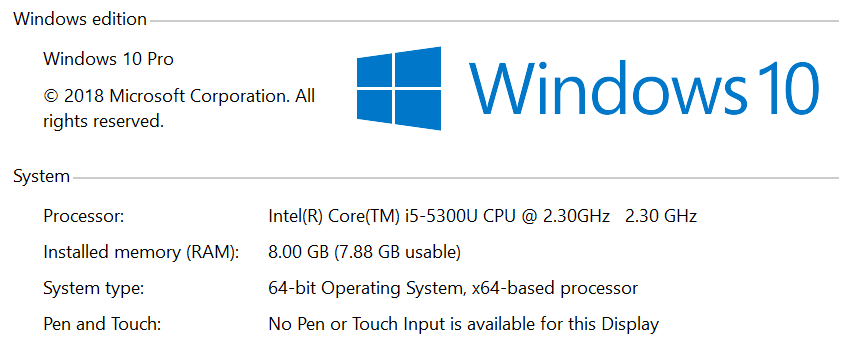

Hi, I'm Michael Mann and I work at NLP Logix. We build predictive models and data visualizations to support our customers desire to make more money.
To demonstrate that predictive modeling can be a tool for solving typical business problems
Provide a path for getting started with machine learning
Remove any an all barriers to using predictive modeling as a tool
Have at least 3 people in the room take this material and build a predictive model to solve a business problem within the next 3 months
Use a data set to explore machine learning as a tool
Compare and contrast 3 modeling approaches
Train some models and look at code
Call predict on a model and look at code
Explore options for deploying models to production

Python 3.7
SQL Server Express
VS Code
Postman
A NFL dataset with plays from 2009-2016
407,688 plays
2,304 games
175 Average number of plays in a game
176 Median number of plays in a game
125 Minimum number of plays in a game
272 Maximum number of plays in a game
13 Standard Deviation of the number of plays in a game
We are going to use Random Forest to answer some questions in our dataset because it is robust, handles outliers well and has interpretability built in
Let's predict if a play will be a run or a pass giving us a confidence metric
Feature engineering
Replace categorical features with numerical representations
Split data into train and cross validation
Call predict
Save outputs to the file system
Binary serialized version of the model
Feature map
Factor map
List of the feature importance ranking of the trained model
A file that contains the predictions of the cross validation set
Let's build a predictive model to predict a cumulative run/pass ratio in a game for the team with posession
IF OBJECT_ID('dbo.lookback', 'U') IS NOT NULL
DROP TABLE dbo.lookback;
select x1.GameID 'prevgameid',
x0.GameID 'curgameid',
x1.PlayID 'prevplayid',
x0.PlayID 'curplayid',
x1.posteam 'prevposteam',
x0.posteam 'curposteam',
x1.PlayType 'PrevPlay',
x0.PlayType 'CurrentPlay',
x0.drive,
x0.qtr,
x0.down,
cast(replace(cast(cast(x0.[time] as time) as varchar(5)), ':', '.') as float) 'TimeLeft',
isnull(x1.IsRun, 0) 'PrevIsRun',
isnull(x1.IsPass, 0) 'PrevIsPass'
into lookback
from (
select
posteam,
gameid,
drive,
down,
qtr,
timesecs,
playtype,
[time],
row_number() over (partition by posteam, gameid order by timesecs desc) as PlayID,
CASE when playtype = 'Run' then 1 else 0 end 'IsRun',
CASE when playtype = 'Pass' then 1 else 0 end 'IsPass'
from NFLPlays2009_2017
where posteam is not null
) x0
left join (
select
posteam,
gameid,
drive,
down,
qtr,
timesecs,
playtype,
[time],
row_number() over (partition by posteam, gameid order by timesecs desc) as PlayID,
CASE when playtype = 'Run' then 1 else 0 end 'IsRun',
CASE when playtype = 'Pass' then 1 else 0 end 'IsPass'
from NFLPlays2009_2017
) x1 on x0.posteam = x1.posteam and x0.GameID = x1.GameID and x0.PlayID = x1.PlayID+1
select x3.*, x3.TotalRun/NULLIF(((x3.TotalRun + x3.TotalPass) * 1.0), 0) 'RunPassRatio'
from
(
select x1.curgameid 'GameId', x1.curplayid 'PlayID', x1.curposteam 'posteam', x1.drive, x1.down, x1.qtr, x1.currentplay 'Play', x1.TimeLeft, sum(x2.PrevIsPass) 'TotalPass', sum(x2.PrevIsRun) 'TotalRun'
from lookback x1
inner join lookback x2
on x2.curgameid = x1.curgameid
and x2.curposteam = x1.curposteam
and x2.prevplayid < x1.curplayid
group by x1.curgameid, x1.curposteam, x1.drive, x1.down, x1.qtr, x1.curplayid, x1.TimeLeft, x1.currentplay
) as x3
order by x3.GameId, x3.posteam, x3.PlayID, x3.Play
Can only be used on the current or prior plays
Requires a DBA/Developer to write/tune the Query
Applies load to the Database Server to compute the result as a running total
Let's build a predictive model to predict a 1/0 value where 1 represents a run and 0 represents a pass
Verify inputs
Transform categorical variables into their numerical representations
Replace null values
Construct a 2d matrix for model prediction
Call predict
Expose the model as an api end-point behind a web server
Using the Function as a Service offerings of any cloud provider
Deploy to a managed server like AWS Elastic Beanstalk
Walked through code to create three styles of models
Walked through code to call predict on models
Demonstrated how to deploy a model as an API
Go forth and solve simple problems with modeling as a tool